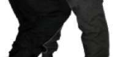
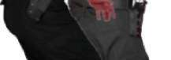
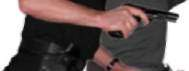
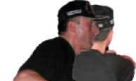
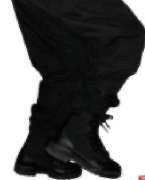
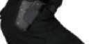
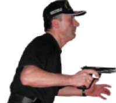

1.6.3. Koşarken Soldan Çıkan Hedeflere Doğru Durarak Atış Tekniği Koşarken sol taraftan çıkan hedeflere karşı önce duruşunuzu step yaparak tamamlayın. Eş zamanlı olarak sola dönüş tekniğini uygulayıp hızlı atış
pozisyonuna geçerek, tabanca elinizde ise direkt hedefe doğrultup atış yapın.
Tabanca kılıfında ve fişek yatağı boş ise çekip kurarak, fişek yatağı dolu ise direk hedefe yönelterek atış yapın. (Bakınız Resim-8.c) 3. Hareket
Atış Pozisyonu
1. Hareket
Koşu Pozisyonu
2. Hareket
Step
Resim-8.c) Koşarken Soldan Çıkan Hedeflere Doğru Durarak Atış Tekniği (Yarı Otomatik Tabanca)